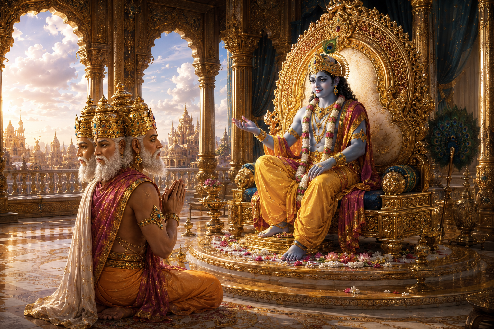
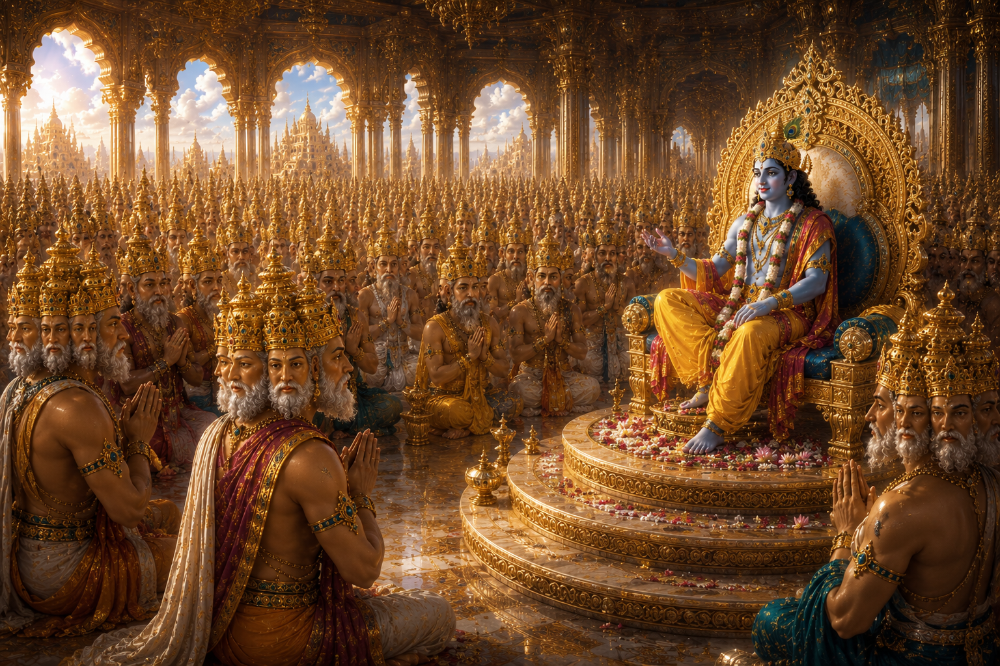
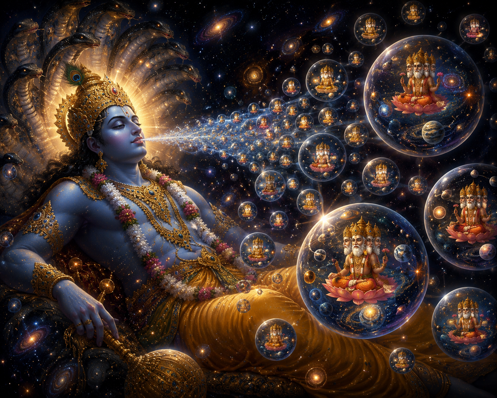

A profound story from the Vaishnava tradition illustrating the limitless majesty of Lord Krishna and revealing that every universe has its own Brahma, Shiva, and Indra.
Once, while Lord Krishna was residing in Dwaraka, Lord Brahma came to meet Him. The gatekeeper immediately informed Krishna that Brahma had arrived and wished to see Him.
On hearing this, Krishna asked a surprising question:
"Which Brahma? What is his name?"
The gatekeeper returned to Brahma and repeated Krishna's question.
Hearing the words, "Which Brahma?", Brahma was astonished. He replied,
"Please tell Lord Krishna that I am the four-headed Brahma, the father of the Four Kumaras."
The gatekeeper conveyed this introduction to Krishna, who then granted Brahma permission to enter.
As Brahma entered the divine assembly and beheld Lord Krishna, he immediately offered his respectful obeisances, bowing at His lotus feet.
Krishna welcomed Brahma with great affection and asked,
"Brahma, for what purpose have you come?"
Brahma replied,
"My Lord, I shall explain the reason for my visit shortly. But first, kindly remove a doubt that has arisen in my mind."
He continued,
"When You were informed of my arrival, why did You ask, 'Which Brahma has come?' What did You mean by that? Is there another Brahma besides me?"
Hearing Brahma's question, Krishna smiled gently.
Then, by His inconceivable divine power, He silently summoned countless Brahmas from innumerable universes.

Within moments, the royal hall was filled with Brahmas whose appearances differed greatly from one another.
Some possessed ten heads, some twenty, some one hundred, some one thousand, some ten thousand, some one hundred thousand, some ten million, and others had numbers of heads beyond imagination.
Along with them came countless Shivas. Some possessed one hundred thousand faces, while others had millions.
Many Indras also arrived, their bodies covered with innumerable eyes.
When the four-headed Brahma of our universe witnessed this extraordinary vision, he stood overwhelmed with amazement.
The greatness of his own position suddenly appeared insignificant.
He later compared himself to a tiny rabbit standing among countless mighty elephants.
Every one of those Brahmas approached Lord Krishna and bowed before His lotus feet.
As they offered their obeisances, their magnificent crowns touched the feet of the Lord.
No one can measure the inconceivable power of Krishna.
All of those Brahmas, though rulers of different universes, stood humbly before the same Supreme Lord.
As innumerable crowns simultaneously touched Krishna's lotus feet, a wondrous sound filled the assembly. It seemed as though the crowns themselves were glorifying the Lord.
Then all the Brahmas and all the Shivas folded their hands and began offering heartfelt prayers.
"O Lord, You have bestowed great mercy upon us. Today we have received the rare fortune of beholding Your lotus feet."
Together they continued,
"O Lord, it is our great fortune that You remembered us and called us here as Your servants. Kindly command us, and we shall carry out Your order with the greatest reverence."
Lord Krishna smiled and replied,
"I simply desired to see all of you together. That is why I called you here."
Lord Krishna then addressed all the Brahmas and asked,
"Are all of you well? Are your universes free from the disturbances caused by the demons?"
All the Brahmas replied together,
"By Your mercy, we remain victorious in every situation."
They continued,
"Whenever the burden of irreligion and sin became too great upon the Earth, You Yourself descended there and removed that burden."
Such was the divine glory of Dwaraka that every Brahma present believed the same astonishing thing:
"Lord Krishna is presently residing within my own universe."
Each Brahma experienced the Lord's presence according to his own universe.
Although they were all gathered in the very same divine assembly, none of them could perceive the others. Every Brahma saw only himself standing before Lord Krishna.
After speaking with them, Krishna granted all the Brahmas permission to return.
Once again, they bowed at His lotus feet before departing for their respective universes.

Having witnessed this extraordinary manifestation of Krishna's divine majesty, the four-headed Brahma of our universe remained overwhelmed with wonder.
Approaching the Lord once more, he bowed before His lotus feet and said,
"My Lord, what I previously understood only through knowledge, today I have realized through direct experience."
He then recited the famous verse from the Srimad Bhagavatam:
jānanta eva jānantu
kiṁ bahūktyā na me prabho
manaso vapuṣo vāco
vaibhavaṁ tava gocaraḥ
Brahma continued,
"Some may claim that they fully know Lord Krishna. Let them think as they wish. As for me, I can only say that Your opulence, Your glory, and Your divine manifestations lie far beyond the reach of my mind, my intelligence, my body, and my words."
This celebrated verse appears in the Srimad Bhagavatam (10.14.38) and was spoken by Lord Brahma himself.
Lord Krishna then explained,
"The universe over which you preside is among the smallest. That is why you possess only four heads."
He continued,
"Some universes extend for billions of yojanas, others for trillions, and still others are vastly greater beyond ordinary comprehension. According to the size of each universe, its Brahma possesses a corresponding number of heads."
"In this way, I sustain and govern countless universes simultaneously."

Krishna further said,
"No one can measure even one-quarter of My divine energy. Who, then, can comprehend the remaining three-quarters that exist within the spiritual realm?"
He continued,
"Beyond the Viraja River lies the eternal spiritual nature—imperishable, limitless, and everlasting. That is My supreme abode, where My three-quarters manifestation eternally resides. This infinite spiritual realm is known as Paravyoma, the Spiritual Sky."
Hare Krishna. 🙏
Primary Source: Chaitanya Charitamrita, Madhya-lila 21
This narration is based primarily on the account found in the Chaitanya Charitamrita, which quotes the teachings of the Srimad Bhagavatam (10.14.38), and is presented in a modern narrative style for contemporary readers.